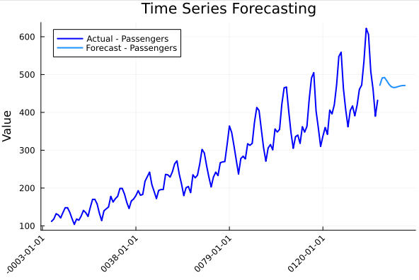

Custom ARIMA Forecasting with Airline Passengers Dataset
Introduction
This tutorial demonstrates how to use CustomARIMA in Julia to fit an ARIMA model and forecast future values using the airline passengers dataset.
Prerequisites
Ensure you have the following Julia packages installed:
using Pkg
Pkg.add(["CSV", "DataFrames", "CustomARIMA"])Loading the Dataset
The airline passengers dataset contains monthly totals of airline passengers from 1949 to 1960. First, load the dataset using CSV.jl and DataFrames.jl:
using CSV, DataFrames, CustomARIMA
airpass = CSV.read("airline_passengers.csv", DataFrame)
y = airpass.PassengersExample Output:
Month Passengers
1949-01 112
1949-02 118
1949-03 132
1949-04 129
1949-05 121
1949-06 135
1949-07 148
1949-08 148
1949-09 136
1949-10 119
1949-11 104
1949-12 118
1950-01 115
1950-02 126
1950-03 141Fitting an ARIMA Model
We fit an ARIMA(2,1,1) model to the data:
model = CustomARIMA.arima(y, 2, 1, 1)
# Print model details
println("AR coefficients: ", model.ar_coef)
println("MA coefficients: ", model.ma_coef)
println("Residual variance: ", model.sigma2)Output:
AR coefficients: [1.0948936024577118, -0.497156521361955]
MA coefficients: [-0.845931080745734]
Residual variance: 844.3485015557588Forecasting Future Values
We generate 12-step-ahead forecasts using our fitted model:
forecasts = CustomARIMA.forecast(model, 12)
println("Forecasts: ", forecasts)Forecast Output:
[471.92, 491.08, 492.22, 483.94, 474.30, 467.87, 465.62, 466.35, 468.27, 470.01, 470.96, 471.14]Preparing Data for Plotting
To visualize the actual and forecasted values, structure the data as follows:
Y_df = DataFrame(ds=collect(1:length(y)), Passengers=y)
Y_hat_df = DataFrame(ds=collect(length(y)+1:length(y)+12), Passengers=forecasts)Plotting the Results
Finally, plot the original series and forecasts using CustomARIMA.plot_series:
CustomARIMA.plot_series(Y_df, Y_hat_df)This will generate a plot showing the actual airline passenger counts along with the 12-month forecast.
Conclusion
This tutorial covered:
- Loading time series data in Julia
- Fitting an ARIMA(2,1,1) model
- Generating 12-step-ahead forecasts
- Visualizing results

You can experiment with different ARIMA parameters (p,d,q) to improve the model's accuracy.